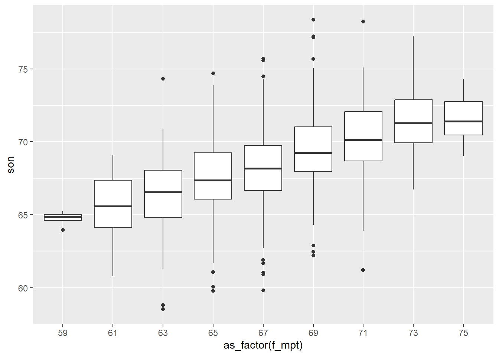

Conditional Distributions
Part 1, session 1b of Data Mining Intro
Abstract
Review concepts and techniques of exploratory data analysis.
Heights of Fathers and Sons
The box-plot below can be regarded as the (sample) conditional distribution of sons’ heights grouped by the height (rounded to the nearest odd inch) of each son’s father.
# A tibble: 9 × 7
f_ivl f_mpt s_count s_min s_mid s_max s_avg
<fct> <dbl> <int> <dbl> <dbl> <dbl> <dbl>
1 (58,60] 59 4 63.9 64.9 65.2 64.7
2 (60,62] 61 16 60.8 65.6 69.1 65.5
3 (62,64] 63 77 58.5 66.5 74.3 66.3
4 (64,66] 65 208 59.8 67.4 74.7 67.5
5 (66,68] 67 276 59.8 68.2 75.7 68.2
6 (68,70] 69 275 62.2 69.2 78.4 69.5
7 (70,72] 71 152 61.2 70.1 78.2 70.2
8 (72,74] 73 63 66.7 71.3 77.2 71.4
9 (74,76] 75 7 69.0 71.4 74.3 71.6The last column in the table above is the sample average of the son’s height given the father’s height, which we take as an estimate of the population average of the son’s height given the father’s height, that is, the conditional expectation of son’s height given father’s height.
The figure below represents these sample conditional averages per father’s height as diamonds, whose area is roughly proportional to the number of son’s in each group. The figure includes a reference line showing the father’s (midpoint) height plus 1 inch, corresponding to our previous calculation of an average son-minus father difference.
The above graph of average son-height per father’s height forms an approximate straight line, although the slope of the line is less than 1, which is the slope of the reference line.
Class Exercise: Diamond Data
Team up with a classmate and load the diamond data provided by R package ggplot2. How many rows of data are there? How many columns? What questions occur to you about the data? How might you address those questions? Take 15 minutes to prepare to report out to the class.
Discussion: what should EDA mean?
Exploratory Data Analysis (EDA) is an approach to data analysis advocated by John Tukey, a leading American statistician of the 20th century. The approach contrasts with what Tukey called “confirmatory analysis”, that is, a focus on probability models of data-generation along with the estimation or testing of model parameters. The difference is one of emphasis: EDA includes models suggested by data, but with an emphasis on understanding current and potential data sets.
The exploration is led by one’s questions about the data. Relevant questions may or may not be obvious (or given). Variables may or may not be readily categorized as “response variables” versus “predictor variables”. The ability to develop and recognize relevant questions is an important skill largely gained through experience.
Important EDA outcomes include
the discovery of unanticipated data patterns, and
proposals to examine tentative answers suggested by the current data, perhaps using a new data set designed for this purpose.
EDA methods are used within the context of confirmatory analysis to examine the data for errors not encompassed by the models under study (e.g., errors in data transcription or transmission), or to search for other departures from model assumptions.
EDA methods can be broadly understood as the methods of descriptive statistics: data summaries (graphical or tabular) intended to enhance our understanding of the data. EDA differs from descriptive statistics in a reliance on the questions of the data analyst and a readiness to examine various transformations of the data.
As an example, here are some ways we might address the question of how, if at all, the heights of fathers and sons differ in the data presented above.
# A tibble: 2 × 5
fs min mid avg max
<chr> <dbl> <dbl> <dbl> <dbl>
1 father 59.0 67.8 67.7 75.4
2 son 58.5 68.6 68.7 78.4The box-plot and table above show that, on average, sons are about an inch taller than fathers. Here’s a histogram of the difference in heights (son minus father) across father-son pairs.
Min. 1st Qu. Median Mean 3rd Qu. Max.
-9.0 -0.9 1.0 1.0 2.7 11.2 The summary of individual differences in height (son minus father) strengthens the previous aggregate summaries: the distribution of son’s height minus father’s height is fairly symmetric around a difference of about one inch.
Team Exercises
Response versus predictor variables: for each of the data sets presented above, propose one or more variables as response variables. How, if at all, might someone else argue for a different choice? What should we mean by “response” and “predictor” variables? Describe a situation in which this distinction would not be suitable.
Regression to the mean: the discussion of father-son heights asserts that: “extremely tall or short fathers [correspond] to not quite so extremely tall or short sons, respectively”. How would you formulate the meaning of that phrase? Do the data demonstrate this phenomenon?
Diamond data: propose a question for the diamond data, and then try to address that question. What (if anything) did you learn from this task?
Survey data: propose a question for the gss_cat data, and then try to address that question. What (if anything) did you learn from this task?
Resources
R Graphics Cookbook (2e) by Winston Chang